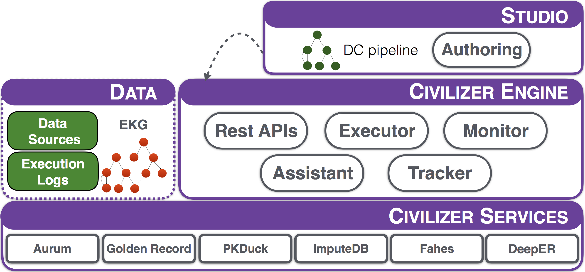

The end-to-end data preparation system
Data Civilizer is an end-to-end data preparation system. Data Civilizer provides data discovery and cleaning services. The main components of the civilizer are shown in the below figure.

Data Civilizer contains three primary layers, namely the CIVILIZER frontend, the CIVILIZER engine, and the CIVILIZER services. The workflow engine allows a user to string together any of the CIVILIZER services in a directed graph to accomplish her data integration goal. Then the engine manages the execution of services in the directed graph. Users interact with the system via the Civilizer Studio.
In a nutshell, Data Civilizer has the following primary services:
You need to install Docker and Docker Compose first, then proceed to the following instructions.
The DC system needs at least 8GB RAM.
The default memory assigned to Docker is 2GB of RAM.
The memory could be adjusted from the Docker preferences.
We recommend to set Docker CPUs to 4, if possible.
The DC system needs 15GB disk space to allocated to Docker; this is including the intermediate images, such as Ubuntu and llsc/cuda-torch.
If the user needs to save some space, you can clean unused images, containers or volumes using system prune:
$ docker system prune
You can also browse the docker images and delete the ones you do not need
$ docker images
$ docker rmi
Get the code
# clone using https
$ git clone --recursive https://github.com/qcri/data_civilizer_system.git
# or if you prefer ssh
$ git clone git@github.com:qcri/data_civilizer_system.git
cd data_civilizer_system
Build the custom llsc/cuda-torch base image:
$ docker-compose build cuda_torch
Build and run all Data Civilizer images:
$ docker-compose build apis && docker-compose build grecord_service && docker-compose build studio && docker-compose up studio
Run the system (if already built):
$ docker-compose up studio
Then visit http://localhost:5000.
In this workflow we want to identify DMVs (Disguised Missing Values), e.g., 11111111 for a phone number, in a data set from the
UCI Repository and to transform the identified DMVs to null values.
We load data from:
/app/storage/data_sets/demo/UCI/adult.csv
and we store the result in:
/app/storage/data_sets/demo/UCIResults/
NOTE: The paths are relative to the Docker Container. See the "app_storage" folder in the Data Civilizer project, if you want to browse the files locally.
Movie Pipeline
Restaurant Pipeline
List
People.